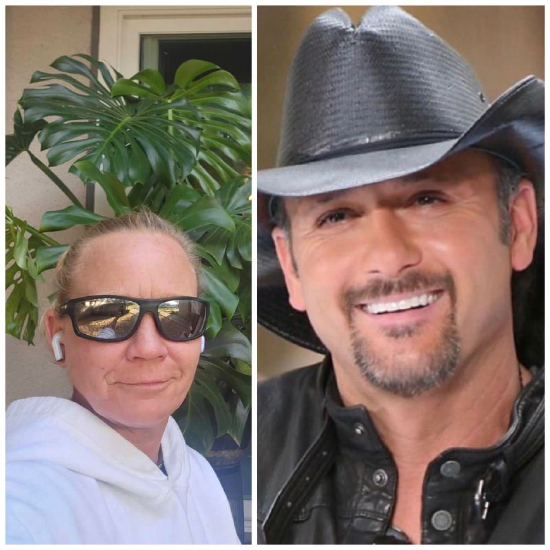

Tim McGraw interview with WorldStar, speaks about upcoming Tour and his new Sweetheart

Reporter: What inspired you to start making music?
Tim McGraw: I've always been drawn to the storytelling and heartfelt emotions in country music. It just resonates with me! Country music has a way of capturing the essence of everyday life and connecting with people on a deep level. The raw emotions and relatable stories inspired me to make country music.
Reporter: How do you approach the songwriting process?
Tim McGraw: When approaching the songwriting process, I often draw inspiration from personal experiences and observations. I try to capture authentic emotions and tell relatable stories that resonate with listeners. I usually start with a melody or a hook that catches my ear. Then, I dive into the lyrics, focusing on storytelling and capturing the essence of the ountry music genre. It's all about finding the right balance between honesty, vulnerability, and catchy melodies.
Reporter: What has been your most memorable performance so far?
Tim McGraw: I think my most memorable performance so far was at the CMA Awards. It was absolutely amazing, I brought so much passion and energy to the stage. 🎤
Reporter: Do you have any musical role models or influences?
Tim McGraw: I have a couple of musical influences and they include legends like Merle Haggard, George Strait, and Bruce Springsteen, This list won't be complete without my father baseball legend Tug McGraw. They have greatly influenced my career and music. Their unique styles, storytelling abilities, and stage presence have inspired me to develop my own distinctive sound and performance style. I have often expressed my admiration for their artistry and the impact they've had on my musical journey
Reporter: How do you balance your personal life with your career?
Tim McGraw: I am known for being dedicated to both my family and my music, and I have spoken about the importance of prioritizing time with loved ones. It's all about finding that balance and making time for what matters most.
Reporter: Are you the best singer in the family?
Tim McGraw: I am the worst singer in the family which is comprised of my exwife and my three daughters. All three of them are great singers, Gracie, 26, Maggie, 24, and Audrey, 21. I'd love to do a song with all three of them at some point. I talk about it all the time and they're like, 'I ain't gonna sing with you, Dad.'"
Reporter: Are you currently in a relationship or is there anyone special in your life?
Tim McGraw: Yes, I'm happily dating someone. She brings so much joy and support to my life, and I'm grateful to have her by my side.
Reporter: You mind telling us about her?
Tim McGraw: All you need to know is her name is Darlene. She's an amazing person and I feel lucky and blessed to have her in my life. Here's a picture of her too.
Reporter: Wow she's so beatiful, do you mind if we use her picture as the headline cover
Tim McGraw: I really do not mind cause that would make her happy and make her understand I really do want to be with her
Reporter: Can you share any upcoming projects or collaborations you're excited about?
Tim McGraw: My fans can expect a very exciting tour, on which Carly Pearce is opening up for me. "It's the first time we've done an arena tour in a long time. I'm looking forward to it. We've got some crazy spectacular production I'm looking forward to everybody seeing. This is probably one the coolest productions we've ever had. We're gonna blow it out," no pyrotechnic stunts are likely during his concert.
Follow us to catch the full interview
©2023 WORLDSTAR HIPHOP